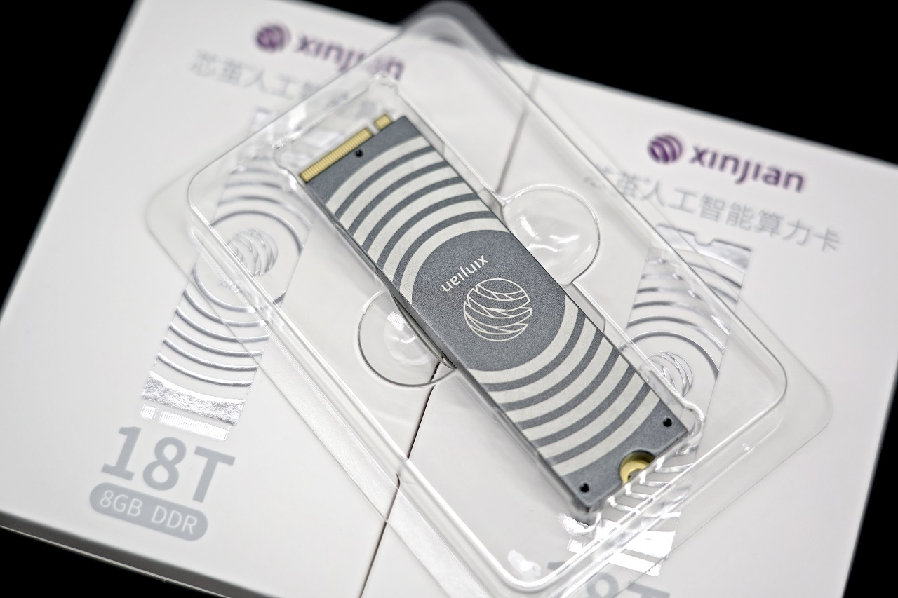

3. AXCL 硬件信息#
3.1. M.2 算力卡#
芯茧® 人工智能算力卡是 深圳市云集互联生态科技有限公司 推出的基于 AX650N 芯片的 M.2 2280 计算卡。
产品图片

产品规格
描述 |
|
|---|---|
SoC |
AX650N |
处理器 |
Octa-corre Cortex-A55@1.7GHz |
内存 |
8GiB，64bit LPDDR4x |
存储 |
16MiB，Nor Flash |
NPU |
18TOPs@Int8，72TOPs@Int4 |
支持 CNN、Transformer 模型部署，支持 LLM、VLM 部署 |
|
视频编码 |
H.264/H.265，16路 1080@30fps 编码 |
视频解码 |
H.264/H.265，32路 1080@30fps 解码 |
Host 适配 |
支持 Intel、AMD、NXP、Xilinx、Raspberry Pi、Rockchip 等 |
Host 系统 |
Ubuntu、Debian、CentOS |
外形尺寸 |
M.2 2280，M Key |
工作电压 |
3.3 V |
整体系统功耗 |
＜8 w |